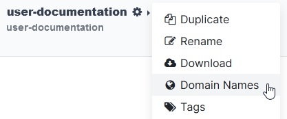

Nombres de dominio¶
Los nombres de dominio son direcciones basadas en texto que identifican ubicaciones en línea, como sitios web. También son más fáciles de recordar, así las personas pueden navegar por internet sin tener que hacer uso de direcciones IP numéricas.
Las bases de datos de Odoo en línea y Odoo.sh usan un subdominio del dominio de odoo.com de forma predeterminada (por ejemplo, miempresa.odoo.com).
Sin embargo, puede hacer uso de un nombre de dominio personalizado y registrar un nombre de dominio gratuito (solo está disponible para las bases de datos de Odoo en línea) o configurar uno que ya le pertenezca.
Registre un nombre de dominio gratis con Odoo¶
Para registrar un nombre de dominio gratuito por un año para su base de datos de Odoo en línea, inicie sesión en su cuenta y vaya al gestor de bases de datos. Haga clic en el icono de engranaje (⚙️) ubicado junto al nombre de la base de datos y seleccione Nombres de dominio.
Busque el nombre de dominio deseado y verifique su disponibilidad.

Truco
Si la opción para registrar un nombre de dominio no aparece, primero asegúrese de que la aplicación Sitio web está instalada.
Seleccione el nombre de dominio deseado, complete el formulario de Propietario del dominio y haga clic en Registrar. El nombre de dominio elegido se vinculará a la base de datos.

Después debe mapear su nombre de dominio a su sitio web de Odoo.
Importante
Recibirá un correo electrónico de verificación de noreply@domainnameverification.net en la dirección que proporcionó en el formulario Propietario del dominio. Es muy importante que verifique su dirección de correo electrónico, así mantendrá el dominio activo y podrá recibir la cotización de renovación antes de que venza.
El registro del nombre de dominio es gratis durante el primer año. Después de este periodo, Odoo continuará gestionando el dominio con Gandi.net, el registrador de nombres de dominio, y se le cobrará la tarifa de renovación de Gandi.net. Cada año, Odoo envía una cotización de renovación a la dirección de correo electrónico que estableció en el formulario Propietario del dominio varias semanas antes de la fecha de vencimiento del dominio. El dominio se renueva de forma automática cuando confirma la cotización.
Nota
Esta oferta solo está disponible para las bases de datos de Odoo en línea.
La oferta está limitada a un nombre de dominio por cliente.
La oferta está limitada al registro de un nuevo nombre de dominio.
La oferta está disponible para los planes de una aplicación gratis. Asegúrese de que su sitio web incluya suficiente contenido original para que Odoo verifique que su solicitud es legítima y respeta la Política de uso aceptable de Odoo. Recibimos varias solicitudes, así que su revisión puede tardar varios días.
Registros DNS¶
Para gestionar los registros DNS de su dominio gratuito, abra el gestor de bases de datos, haga clic en el icono de engranaje (⚙️) ubicado junto al nombre de la base de datos, seleccione Nombres de dominio y haga clic en DNS.
A: el registro A contiene la dirección IP del dominio. Se crea de forma automática y no se puede editar ni eliminar.
CNAME: los registros CNAME se encargan de reenviar un dominio o subdominio a otro dominio. Uno se crea de forma automática para asignar el subdominio
www.a la base de datos. Si cambia el nombre de la base de datos, también deberá cambiar el nombre del registro CNAME.MX: los registros MX le indican a los servidores a dónde enviar los correos electrónicos.
TXT: los registros TXT sirven para cumplir con distintos propósitos (por ejemplo, para verificar la propiedad de un nombre de dominio).
Cualquier modificación a los registros DNS puede tardar hasta 72 horas en propagarse a todos los servidores.
Nota
Envíe un ticket de soporte si necesita ayuda para gestionar su nombre de dominio.
Buzón de correo¶
La oferta de un año de dominio gratis no incluye buzón de correo, pero hay dos opciones para vincular su nombre de dominio con uno.
Usar un subdominio¶
Puede crear un subdominio (por ejemplo, subdominio.sudominio.com) para usarlo como un dominio de seudónimo para la base de datos. Esto permite que los usuarios creen registros en la base de datos a partir de los correos electrónicos que reciben en su seudónimo correo@subdominio.sudominio.com.
Para ello, abra el gestor de bases de datos, haga clic en el icono de engranaje (⚙️) ubicado junto al nombre de la base de datos y vaya a . Después, escriba el subdominio deseado en el campo Nombre (por ejemplo, subdominio), el dominio original de la base de datos con un punto al final (por ejemplo, miempresa.odoo.com.) en el campo Contenido y haga clic en Agregar registro.
Luego, agregue el dominio del seudónimo como su propio dominio. Haga clic en Usar mi propio dominio, escriba el dominio del seudónimo (por ejemplo, subdominio.sudominio.com), haga clic en Verificar y luego en Confirmo, está listo.
Por último, vaya a su base de datos y abra Ajustes. Habilite los servidores de correo electrónico personalizados, escriba el dominio del seudónimo (por ejemplo, subdominio.sudominio.com) y haga clic en Guardar.
Usar un proveedor de correo electrónico externo¶
Es necesario que configure un registro MX para poder utilizar un proveedor de correo electrónico externo. Para ello, abra el gestor de bases de datos, haga clic en el icono de engranaje (⚙️) ubicado junto al nombre de la base de datos, haga clic en . Los valores que agregará a los campos Nombre, Contenido y Prioridad dependen del proveedor de correo electrónico externo.
Configurar un nombre de dominio existente¶
Si ya cuenta con un nombre de dominio, puede usarlo para su sitio web de Odoo.
Advertencia
Le recomendamos que siga estos tres pasos en orden para evitar cualquier problema con la validación de certificados SSL:
Agregar un registro CNAME¶
Es necesario que agregue un registro CNAME para reenviar su nombre de dominio a la dirección de su base de datos de Odoo.
La dirección de destino del registro CNAME debe ser la dirección de su base de datos tal como la definió al crearla (por ejemplo, miempresa.odoo.com).
La dirección de destino del registro CNAME debe ser la dirección principal del proyecto, disponible en Odoo.sh si se dirige a , o una rama específica (producción, preproducción o desarrollo) si se dirige a y hace clic en ¿Cómo configurar mi dominio?. Un mensaje le indicará a qué dirección debe apuntar su registro CNAME.
Las instrucciones específicas dependen de su servicio de alojamiento de DNS.
Ver también
Importante
Odoo solo admite subdominios. Para utilizar su dominio simple (un nombre de dominio sin ningún subdominio o prefijo) (sudominio.com), cree una redirección 301 para dirigir a los visitantes a www.sudominio.com.
Example
Usted es propietario del nombre de dominio sudominio.com y la dirección de su base de datos de Odoo en línea es miempresa.odoo.com. Es común que desee acceder a su base de datos de Odoo con el dominio www.sudominio.com pero también con el dominio simple sudominio.com.
Para ello, deberá crear un registro CNAME para el subdominio www en el que el destino sea miempresa.odoo.com y después crear una redirección (3010 redirección permanente o visible) para redirigir a los visitantes de sudominio.com a wwww.sudominio.com.
Mapear un nombre de dominio a una base de datos de Odoo¶
Advertencia
Asegúrese de haber agregado un registro CNAME al DNS de su nombre de dominio antes de mapear el nombre de su dominio a la base de datos de Odoo.
Si no lo hace, podría evitar la validación del certificado SSL, lo que a su vez causaría un error de discordancia con el nombre del certificado. Por lo general, los navegadores web indican esto mediante una advertencia en la que aparece el mensaje «La conexión no es privada».
En caso de que ocurra este error después de mapear el nombre de dominio a su base de datos deberá esperar máximo cinco días, pues es probable que la validación se encuentre en curso. De lo contrario, envíe un ticket de soporte e incluya capturas de pantalla de sus registros CNAME.
Abra el gestor de bases de datos, haga clic en el icono de engranaje (⚙️) ubicado junto al nombre de la base de datos y vaya a . Luego, escriba el nombre de dominio (por ejemplo, tudominio.com), haga clic en Verificar y luego en Confirmo, está listo.

En Odoo.sh, vaya a , escriba el nombre de dominio a agregar y haga clic en Agregar dominio.

Ver también
Ramas de Odoo.sh: pestaña de ajustes
Cifrado SSL (protocolo HTTPS)¶
El cifrado SSL permite que los visitantes naveguen por un sitio web a través de una conexión segura. Aparece con el protocolo https:// al principio de una dirección web en lugar del protocolo no seguro http://.
Odoo genera un certificado SSL distinto para cada dominio mapeado a una base de datos, mediante la autoridad de certificación Let’s Encrypt y el protocolo ACME.
Nota
Generar un certificado puede tomar hasta 24 horas.
Se realizan varios intentos para validar su certificado durante los cinco días posteriores de mapear su nombre de dominio a su base de datos.
Si hace uso de otro servicio, puede seguir usándolo o cambiarse a Odoo.
Importante
No se generan certificados SSL para los dominios simples (nombres de dominio sin subdominios ni prefijos).
URL web base de la base de datos¶
Nota
Omita esta sección si su base de datos tiene la aplicación Sitio web instalada, continúe en la sección Mapear un nombre de dominio a un sitio web de Odoo .
La URL web base o URL raíz de una base de datos afecta la dirección de su sitio web principal y todos los enlaces que sus clientes recibieron (por ejemplo, cotizaciones, enlaces al portal, entre otros).
Para convertir su nombre de dominio personalizado en la URL web base de su base de datos, primero acceda a su base de datos con su nombre de dominio personalizado e inicie sesión como administrador (un usuario que forma parte del grupo de permisos de acceso a los ajustes en Administración).
Importante
Si accede a su base de datos con la dirección original de Odoo (por ejemplo, miempresa.odoo.com), la URL base web de su base de datos se actualizará. Para evitar que ocurra esto con la URL base web cuando un administrador inicie sesión en la base de datos, active el modo de desarrollador, vaya a . En la Clave escriba web.base.url.freeze y establezca True como Valor.
Nota
También puede establecer la URL base web de forma manual. Para ello, active el modo de desarrollador, vaya a , busque la clave web.base.url (créela si es necesario) y escriba la dirección completa de su sitio web en el valor correspondiente (por ejemplo, https://www.sudominio.com). La URL debe incluir el protocolo https:// (o http://) y no terminar con una barra (/).
Mapear un nombre de dominio a un sitio web de Odoo¶
Mapear su nombre de dominio a su sitio web no es igual a mapearlo a su base de datos:
Define su nombre de dominio como el principal para su sitio web, lo que ayuda a los buscadores a indexar su sitio web de forma correcta.
Define su nombre de domino como la URL base para su base de datos e incluye los enlaces del portal enviados por correo electrónico a sus clientes.
En caso de que tenga varios sitios web, mapea su nombre de dominio al sitio web correcto.
Vaya a . En caso de que tenga varios sitios web, seleccione el que desea configurar. Escriba la dirección de su sitio web (por ejemplo, https://www.sudominio.com) en el campo Dominio y haga clic en Guardar.
Advertencia
Mapear su nombre de dominio a su sitio web de Odoo evita que el buscador web de Google indexe la dirección original de su base de datos (por ejemplo, miempresa.odoo.com).
Si ambas direcciones ya están indexadas, puede que pase tiempo antes de que la indexación de la segunda dirección se elimine del buscador web de Google. Puede utilizar Search Console de Google para solucionar el problema.
Nota
Si tiene varios sitios web y empresas en su base de datos, asegúrese de seleccionar la empresa correcta en . Esto le indica a Odoo qué URL utilizar como la URL base según la empresa en uso.